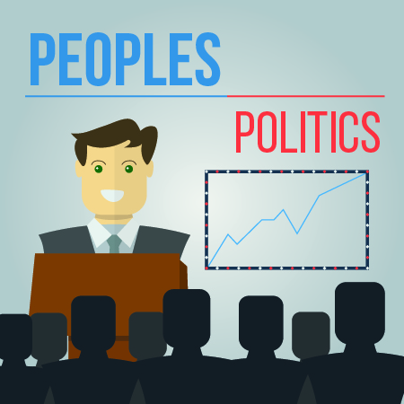
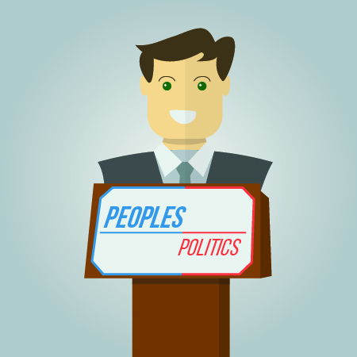
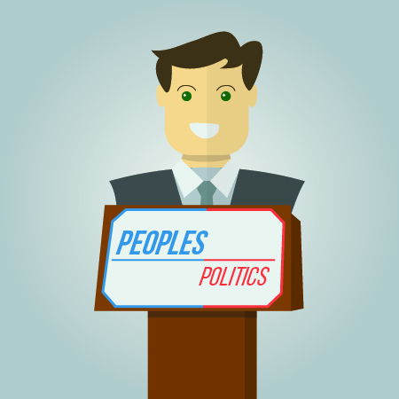

 


Having heard the government statistic that 42% of young people had no interest in politics, we decided to test their figures. We found that the vast majority of our friends were unaware of the fact that there was an election taking place last May 2015. Later on, when they found out about it, they were just simply uninterested. This was mostly due to them not being able to understand any of the terms used by MPs (e.g. austerity, Robin hood tax etc). Because of this, we personally feel young people are out of touch with politics and simply don’t understand the terminology used. This means that when they become 18 and are able to vote, they lack the experience and understanding of ideas to make a justified decision - they are uninformed and don't know enough about the parties to decide which policies will benefit them the most. After surveying a sample of children about the dilemma, we realized that this issue of being put off politics (due to factors such as complexity) was very common, but we believe all the problems which came up (except for "politicians often lie") were fixable.
Our app will focus on three features:
1) Provide simple, easy to understand information on what politics terms mean in the
straightforward terms, so that everyone can understand it
2) Give clear data on the parties, such as what they stand for and where they are on
the political spectrum
3) Interactive elements such as a quiz and a fun game - ' your country ' - which compares
your choices as prime minister with the party leaders and sees which party this most aligns
with (you are given a budget and a time limit, during in which you can decide how to spend
the budget. You can always choose to reduce current expenditure, or you could even spend none
of the money at all; the choices you make will be matched to predictions of what the party
leaders themselves would do, helping you find a match). These entertaining features which
help keep users interested.